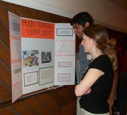
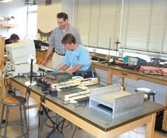

|
Presentations
PARTICLE
Day
Summer Institute
Teacher
Poster Templates
|
Student PARTICLE Day Presentations
Learn
about PARTICLE Day.
- 2006 Presentations & Posters
- Effect of Time of Day on Muon Count,
Canandiagua, (Presentation)
(Poster)
- Muon Showers, Canandiagua, (Presentation)
- Solar Flares, X-rays, and Muon Rate, Pittsford-Mendon, Pd. 4, (Presentation)
('03 Flare Movie) ('05 Flare Movie )
- The Beautiful K-index, Pittsford-Mendon, Pd. 6, (Presentation)
(Poster)
- Muons and Pressure, Pittsford-Mendon, Pd. 8, (Presentation)
(Poster)
- NuTev Scintillator Panel Restoration (Poster)
- 2005 Presentations & Posters
- 2004 Presentations & Posters
- Muon Rate Angular Dependence (html)(pdf)
- Coincidence Runs (html)(pdf)
Daryl Burke II and Mark Zschoche
- The Effect of Paddle Area on Muon Coincidence (html)(pdf)
- Correlation between Time of Day and Muon Rate (html)(pdf)
- Speed of Muons (html)(pdf)
Naples High School - Chris Eleiott, Marcy McNamara,
Joe Miller, Ray Peiffer, and Matt Santangelo
- The Haunting of the Halloween Forbush Decrease of
2003 (Muon Rate Dependence on Solar Flare) (html)(pdf)
Pittsford Mendon High School
- Muon Rate vs. Time of Day (Adelaide vs. Mendon) (html)(pdf)
Pittsford Mendon High School
- Shielding Muons (html)
- Muon Contour (html)(pdf)
- Mendon Muon Research 2003-2004 (pdf)
Pittsford Mendon High School
- Cosmic Rays in Flight (pdf)
Byron Bergen High School
- 2003 Presentations & Posters
- Atmospheric Pressure and Muon Rate (html)(pdf)
Pittsford Mendon High School - 9th period Honors Physics
class
- Muon Rate vs. Time of Day (html)(pdf)
Pittsford Mendon High School - 7th period Honors Physics
class
- Paddle Separation (html)(pdf)
Franklin High School
- Muon Triangle Experiment (html)(pdf)
- Count Rate vs. Lead Thickness (html)(pdf)
- Showering Franklin High School (html)
Vassana Praseutsinh, Maggie Cruz, and Rafiquikka Collins
- Map of the Sky (html)
Inna Nepliy, Amanda Kimbrew, Grissel Rivera, and Alina
Beley
- 2002 Presentations & Posters
- Pittsford-Sutherland Lifetime of the Muon (pdf)
- Muon Rate and Direction/Shielding and Location (html)(pdf)
- Muon Lifetime (html)(pdf)
- 2001 Presentations & Posters
- Angular Dependence (html)
Naples High School
- Altitude Dependence (html)
Naples High School
- Relative Absorption of Lead and Water (html)
Greece High School
- Swimming Pool Absorption (html)
Greece High School
- Analysis of Experimental Set Up in Muon Signal Processing
(html)(pdf)
- Effect of Lead and Concrete on Muon Rate (html)(pdf)
Greece Acadia High School - Lisa Turnia
|
Student/Teacher Summer Institute Presentations
Learn
about the Summer Institute
and Research Experience for
High School Students.
- 2005 Presentations & Posters
- Development of an Aqueous Scintillator to Detect Gamma
Rays from Radioactive Cesium-137 and Cobalt-60, (Poster)
- Muon Ray Wave Fronts and Showers, (Poster)
- Muons in Atmospheric Air Showers (Presentation)
- An Investigation into the MOLAR Detector with respect
to Efficiency and the Effects of Pressure and Solar
Influences on Muon Rate, (Poster)
- Characteristics of Muons in Atmospheric Showers, (Presentation)
- NuTev Scintillator Restoration Overview 2005, (Poster)
- Photomultiplier Tube Gain Testing, (Poster)
- 2004 Presentations & Posters
- Instrumental Set-up for Liquid Scintillation Counting
– The BETTY DAQ (Poster)
- Developing an Acqueous Scintillator for Neutrino Detection
(Poster)
- Photomultiplier Tube Gain Testing (Poster)
- Frame Building and Mounting Photomultiplier Tubes
(Poster)
- NuTeV Scintillator Restoration Overview (Poster)
- Effect of Atmospheric Conditions, Space Weather, and
Time of Day in Cosmic Muon Rates (Poster)
|
Teacher Presentations
- Mechanics with Muons: Tinkering with Paddles and Pedagogy,
Greg Baker (Presentation)
- Speed of Muons, Mike Carges and Carol Hoffman (Presentation)
|
Poster Templates
We can print your Powerpoint posters for PARTICLE Day at
U of R!
- Just prepare your poster from these
templates
- Then send us your completed posters no later than the
Tuesday before PARTICLE Day
|
| |
|
|
Department of Physics and Astronomy, University of Rochester, PO Box
270171, Rochester, NY 14627-0170, (585)-275-5306 |
|